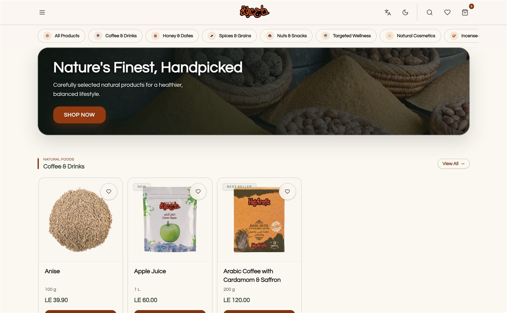

Haj Arafa App
An intuitive, accessible e-commerce experience designed with responsive layouts and seamless navigation to maximize user conversion and engagement.

Context & challenge
The primary challenge was reducing cart abandonment rates and streamlining the shopping journey. Users frequently struggled with finding specific products and experienced friction during the multi-step checkout process on mobile devices.
Approach & key decisions
I redesigned the core user flows, focusing on an intuitive search-first navigation model and a frictionless checkout experience. By introducing guest checkout and optimizing touch targets for mobile users, we significantly reduced the time to purchase.
Tools & Technologies
Outcome & reflection
This project reinforced the importance of mobile-first design. Early usability testing revealed that our initial checkout flow was too dense for smaller screens, prompting a crucial pivot to a step-by-step accordion model that ultimately boosted conversion.
Evidence & limitations
This page documents the current design rationale and available implementation. It does not claim a measured business outcome unless a verified metric is shown. Use the live-project link to inspect the working experience.